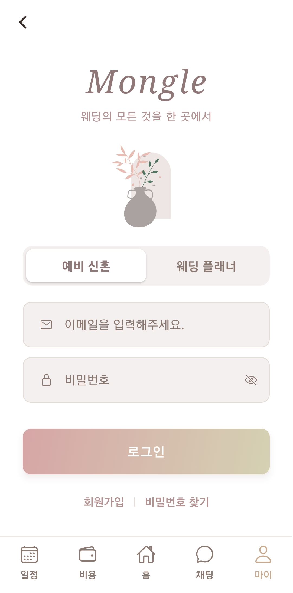
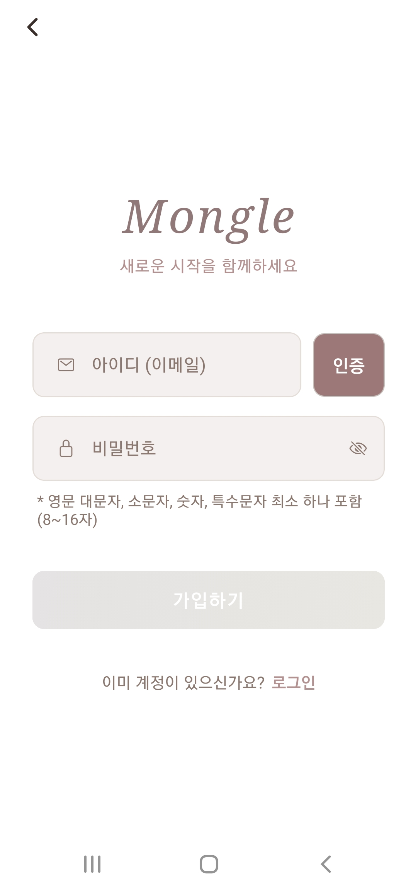
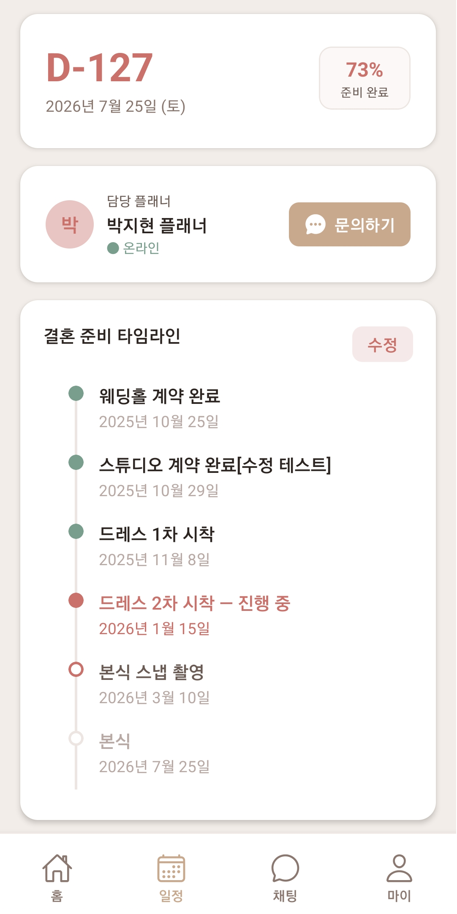

Today's Summary
오늘의 작업 요약
| 구분 | 내용 | 파일 |
|---|---|---|
| UI | 로그인 버튼 그라데이션 + 그림자 적용 | login.jsx |
| UI | 가입하기 버튼 그라데이션 적용 | register.jsx |
| UI | 이메일 인증 커스텀 모달 구현 | register.jsx |
| 에셋 | Lottie JSON 색상 교체 (4개 레이어) | Animated_leaves.json |
| UI | Lottie 애니메이션 로그인 화면 배경 적용 | login.jsx |
| 기능 | 달력 일정 추가 모달 구현 | timeline.jsx |
| 기능 | 6가지 색상 팔레트 확장 | timeline.jsx |
| 기능 | 월별 일정 필터링 | timeline.jsx |
| 기능 | 타임라인·달력 데이터 통합 (3→1 상태) | timeline.jsx |
| 기능 | 비용·잔금 관리 모달 구현 | timeline.jsx |
| 기능 | 타임라인 도트 색상 규칙 통일 | timeline.jsx |
| 버그 | JSX 닫는 태그 중복 오류 수정 | timeline.jsx |
| 버그 | 다른 달 일정 현재 달 표시 문제 수정 | timeline.jsx |
01 — login.jsx
로그인 화면 UI 개선

1-1. 로그인 버튼 그라데이션
-
expo-linear-gradient패키지 설치 및LinearGradient적용 -
colors:
['#d6a6a6', '#d5d1b3']— 핑크에서 베이지로 대각선 방향 - TouchableOpacity(wrapper) → LinearGradient → Text 구조로 감싸기
1-2. 로그인 버튼 그림자
-
그림자는
LinearGradient가 아닌 바깥 wrapper에 적용 -
shadowColor: '#d6a6a6'— 버튼 색상에 맞춘 컬러 그림자 -
iOS
shadow*속성 + Androidelevation속성으로 크로스플랫폼 대응
1-3. Lottie 배경 애니메이션
-
lottie-react-native설치 후Animated_leaves.json배경 적용 -
StyleSheet.absoluteFill + left: 30으로 위치 조정 -
npm install --legacy-peer-deps로 의존성 충돌 해결
02 — register.jsx
회원가입 화면 개선

2-1. 가입하기 버튼 그라데이션
- 로그인 버튼과 동일한
LinearGradient적용 -
isSignUpEnabled에 따른 활성/비활성 색상 분기 처리
2-2. 이메일 인증 커스텀 모달
Alert.alert3곳을 커스텀 Modal로 전면 교체-
showModal(title, message, onConfirm)헬퍼 함수로 모달 제어 - 확인 버튼에 그라데이션 동일 적용 — 앱 전체 UI 통일
03 — Animated_leaves.json
Lottie 에셋 색상 교체
Mongle 앱 디자인 톤에 맞게 4개 레이어 색상 교체를 완료했습니다.
| 레이어 | 원본 | 교체 | 적용 수 |
|---|---|---|---|
| 화분/돌맹이 | #b9571a |
#aaa2a1 |
5곳 |
| 줄기 (Stem) | #2d4245 |
#537663 |
6곳 |
| 잎/기타 | #662612 |
#e6bcb3 |
17곳 |
| 배경 (Bg) | #ffd69b |
#ede6e4 |
1곳 |
04 — timeline.jsx
타임라인 화면 대규모 개선

4-1. 달력 & 타임라인 데이터 통합
기존 3개의 별도 상태를 timelineItems 단일 소스로
통합하여 관리 복잡도를 대폭 줄였습니다.
변경 전
3개 별도 상태
timelineItems(별도)scheduleEvents(별도)markedDates(별도)
변경 후
1개 단일 소스
timelineItems— 단일 소스markedDates→ 파생(computed)visibleEvents→ 파생(computed)
4-2. 달력 일정 추가 모달
- 달력에서 날짜 선택 → 모달에 자동 입력
- 6가지 색상 팔레트 적용 (로즈, 세이지, 라벤더, 스카이, 피치, 민트)
- 필수 항목 미입력 시 추가 버튼 비활성화
4-3. 월별 필터링
-
Calendar onMonthChange로visibleMonth상태 추적 - 해당 월 일정만 날짜순 정렬 표시
- 일정 없을 경우 안내 문구 표시
4-4. 비용·잔금 관리
-
COST_ITEMS+BALANCE_ITEMS→INITIAL_COST_ITEMS단일 배열 통합 - 항목 추가/삭제, 잔금 세부 입력 (금액, 마감일, 긴급 여부)
- 전체 예산 입력 → 합계 대비 프로그레스바 실시간 반영
4-5. 타임라인 도트 색상 규칙
| 상태 | 도트 스타일 | 색상 |
|---|---|---|
done (완료) |
초록 채움 | #7A9E8E |
active (진행 중) |
로즈 채움 | #C9716A |
next (다음 예정) |
로즈 빈 원 | #C9716A (테두리) |
future (미래) |
회색 빈 원 | #D4C9C5 (테두리) |
05 — Bug Fix
버그 수정
Bug 01
SyntaxError: JSX 닫는 태그 중복
원인
</View> 태그 1개 중복 작성
해결
중복
</View> 1개 제거
Bug 02
다른 달 일정이 현재 달에 표시
원인
전체 이벤트 목록을 월 필터 없이 렌더링
해결
월별 필터링(4-3 작업)으로 해결
06 — Git Issues
Git 이슈 해결
Git 01
브랜치 push 시 chat 폴더 소실
원인
design/#2 브랜치가 chat 폴더 추가
이전 커밋에서 분기
해결
git merge main으로 chat 폴더 병합, timeline.jsx
충돌 해결
Git 02
PowerShell 괄호() 경로 오류
원인
PowerShell이
()를 표현식으로 해석
해결
경로 전체를 큰따옴표로 감싸기 →
git add "app/(couple)/timeline.jsx"
Git 03
not a git repository 에러
원인
git 명령어를 저장소 상위 폴더에서 실행
해결
cd C:\workspace\mongle\mongle\Mongle-app 이동
후 실행
07 — Tomorrow's Plan
내일 예정 작업 (2026.03.26)
Task 01
웨딩플래너 전용 메인 화면 구성
P0
작업 내용
담당 커플 전체를 관리할 수 있는 업무 화면
상단 요약 바, 할 일 및 체크리스트, 커플 일정 현황, 협력 업체 카드
상단 요약 바, 할 일 및 체크리스트, 커플 일정 현황, 협력 업체 카드
Task 02
채팅창 라우터 수정
P0
작업 내용
채팅창에서 뒤로가기 버튼을 누르면 홈 화면으로 이동하는 구조
수정
Comments